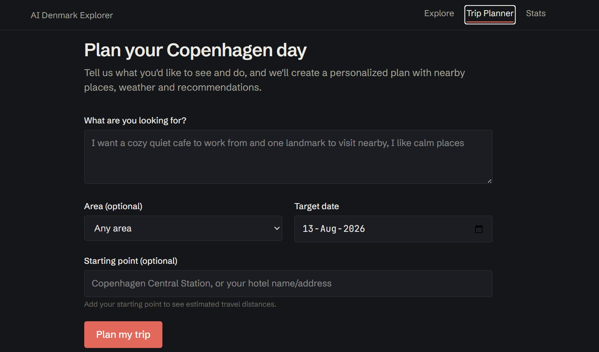

Data Scientist · Copenhagen · Open to roles across Denmark
Rakib Hasan.
I turn complex data into intelligent systems that ship.
MSc in Business Data Science, Aalborg University on top of five years of hands-on data work. I build NLP/LLM pipelines, forecasts, and data products, and I don't call them done until they're deployed and used.
I combine data science, AI engineering, and product thinking to move from insight to deployed product.
- MSc '26Data Science
- 6,500+Articles / day
- 6Deployed apps

Work that shipped.
Planning a real trip, not a demo.
A trip-planning tool is only useful if it's honest about what it knows. I built one that reasons over real places and real weather, with a model that reports its own accuracy instead of hiding it.
Trip-planning tools either hand you generic listicles or hallucinate details with no way to check them. There's no single tool that reasons over real place data, live conditions, and an honestly-reported model.
A full-stack platform: Next.js/React/TypeScript frontend on Vercel, FastAPI backend on Render, and a Neon PostgreSQL/pgvector database. A RAG pipeline (fastembed embeddings, pgvector similarity search) grounds GPT-4o summaries in real Copenhagen places sourced from OpenStreetMap, with a live Nominatim/Serper fallback covering thin or missing listings. A two-agent CrewAI system (OpenAI GPT-4o-mini, GPT-4o) plans a real recommendation grounded in live Open-Meteo weather, using Pydantic/instructor-validated structured intent to deterministically route each request (near, far, sequential, or area) instead of relying on free-form AI tool calls, never inventing a fact it can't cite.
Built and backtested a live XGBoost recommendation-confidence classifier (Optuna-tuned, MLflow-tracked) that combines offline DistilBERT sentiment with real-time semantic signals, reaching a Pearson correlation of r = 0.713 with real outcomes, validated with a live A/B test on prompt quality.
Next.js · React · TypeScript · FastAPI · PostgreSQL/pgvector (Neon) · RAG · CrewAI · GPT-4o · Pydantic · XGBoost · DistilBERT · Optuna · MLflow

Reading bias at scale.
Media bias is easy to sense and hard to measure. For my master's thesis I built a system that does it every single day, across outlets, at article level, and serves the results live.
Bias in geopolitical news coverage is discussed constantly but rarely quantified. Manual analysis doesn't scale past a handful of articles.
An end-to-end Python pipeline: source-specific scrapers (BBC, The Guardian, Daily Star, New Age) run daily via GitHub Actions, storing every article in a SQLite database and feeding a continuously updating corpus. TF-IDF retrieval pairs comparable coverage; GPT-4o scores framing, selection/omission, sourcing and tonal bias.
A living corpus of 6,500+ scored articles and an interactive Streamlit app where anyone can compare outlets and time periods, running unattended, updating itself every day.
Python · Pandas · SQL · GPT-4o · TF-IDF · GitHub Actions · Streamlit · trafilatura

Analyst's discipline, builder's instinct.
During my MSc in Business Data Science at Aalborg University I focused on applied machine learning, NLP & network analysis, deep learning, data governance and data engineering & MLOps, then put it into practice with a thesis that scores thousands of news articles a day and serves the results live.
Before that: five years owning operational databases end-to-end, building the dashboards and reports management relied on daily, and learning first-hand what happens to a business when data isn't accurate or trusted. That is the lens I bring to data science; I care as much about the pipeline as the model at the end of it.
- Location
- Copenhagen, Denmark
- Focus
- ML & AI · NLP/LLMs · Pipelines · MLOps · Forecasting
- Languages
- English (fluent) · Danish (learning)
What I work with.
Python and SQL for everything from cleaning to feature engineering.
Python · Pandas · NumPy · SQL · Git/GitHub · Feature engineering · FastAPI · REST API design · PostgreSQL/pgvector (Neon)
Shipping the interface, not just the model behind it.
React · Next.js · TypeScript · Tailwind CSS · Recharts
Classical ML, forecasting, and LLM workflows that reach production.
Scikit-learn · XGBoost · Random Forest · Time-series · A/B testing · NLP · RAG · Semantic search/embeddings · sentence-transformers · fastembed · Hugging Face Transformers · DistilBERT · LangChain · Ollama · Groq · OpenAI API · Prompting · Structured output (Pydantic/instructor) · CrewAI · Agentic systems · MLflow · Optuna · PyTorch · TensorFlow · Docker
From exploratory plots to the reports management actually reads.
Matplotlib · Seaborn · Streamlit · Excel · Management reporting
Scrapers and CI that keep datasets alive without me touching them.
Requests · BeautifulSoup · Playwright · trafilatura · Nominatim · Serper API · pytest · ruff · GitHub Actions · Render deployment
Academic background.
MSc in Business Data Science Aalborg University, Denmark
Thesis: AI-assisted media bias detection using NLP and LLM-based analysis. Coursework across applied ML, NLP & network analysis, deep learning & AI, data-driven business modelling, data governance & ethics, and data engineering & MLOps.
BBA, Management Information Systems University of Dhaka
Data-driven decision-making, information systems, business strategy and leadership. Where the business-first lens on data started.
Where I've worked.
Assistant Manager (Data & Reporting) V. A. Transport Agency
- Owned the company's operational databases end-to-end, safeguarding the accuracy and consistency behind every team's reporting.
- Built recurring dashboards and reports that became management's standard basis for day-to-day logistics decisions.
- Analysed operational data to surface inefficiencies, streamlining scheduling and workflows with cross-functional teams.
Senior Officer V. A. Transport Agency
- Maintained operational records and service data supporting planning, follow-up and cross-team communication.
- Coordinated transport operations, customer communication and documentation; improved reporting processes.
Part-time Sushi Chef Karma Sushi & Catch Sushi Bar, Aalborg
Kitchen work in a Danish team alongside a full-time MSc: time management, quality control, composure under pressure.
Outside the notebook.
Volunteering
Leadership
Off hours
- Nature Walks
- Photography
- Travelling
- Reading
Let's build something
that ships.
Open to Data Scientist, Data Analyst, AI Engineer and ML/NLP roles in Copenhagen and beyond. Feel free to reach out; I usually reply within a day.